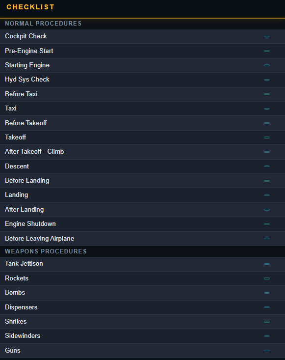
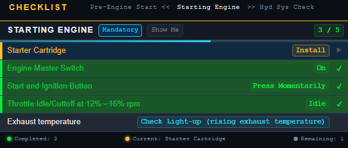
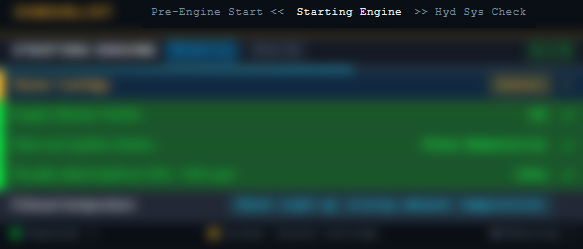
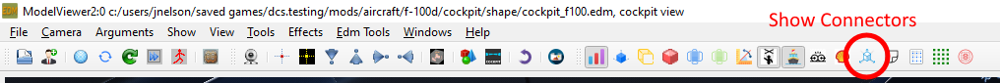
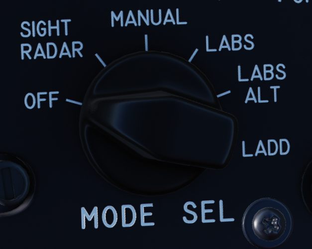

Checklist
Usage
The checklist can by default be opened with LShift + C.
Procedures

This page displays the procedures split into their different categories. Clicking on a procedure will navigate there.
Procedure Page

This is an example showing the procedure page with some procedures already completed.
Checklist Button
This acts as a home button navigating to the procedures page.
Navigation Bar

The navigation bar shows the current procedure in the centre and the previous (left) and next (right) procedures either side. The next and previous procedures can be clicked to navigate to them.
Show Me
The show me button will highlight the current item in the cockpit.
Checklist Detail
This toggles between the three types of detail.
| Detail | Description |
|---|---|
| Mandatory | Required to complete the current checklist procedure. |
| Abbreviated | Includes checks that would be completed in reality but can be also checked in game. |
| Realistic | Includes checks that would be completed in reality but are not possible to check in game: harness tight for example. |
Advance Checklist Command
Advance checklist command is used to manually check items which are not automatically checked or to bypass an item. The advance checklist command will manually check the highest unchecked item (current item) on the checklist. Once all items are check the advance checklist command will switch to the next procedure. If there is no next procedure then in this case the advance checklist command will do nothing.
Customising the Checklist
The checklist structure is made from a json file listing the procedures and categories. When a checklist.json is provided in C:/users/<you username>/Saved Games/DCS F-100D this custom checklist will be used. As a starting point you can copy the built-in checklist which is found DCS World/Mods/Aircraft/f-100d/checklist/default.json.
If this checklist fails to load because of a syntax error then that error will be reported in your DCS log located in C:/users/<you username>/Saved Games/DCS/Logs/dcs.log. Example error may look like
ERROR F100 (Main): [Checklist Load Error]: [json.exception.parse_error.101] parse error at line 26, column 35: syntax error while parsing object - unexpected string literal; expected '}'
The general file structure for checklist.json is as follows.
[ // list of categories
{ // category
"name" : "your category name 1",
"procedures" : [
{ // procedure
"name" : "your procedure name 1",
"items" : [
// list of items
]
}
]
}
]
There can be any number of categories, any number of procedures in each category and any number of items in each procedure. The structure of an item is shown below.
{
"text" : "Item to be set",
"value" : "State pilot should set: On or Off etc",
"priority" : 1, // (optional) 1,2,3 for mandatory, abbreviated, realistic respectively. With this key/value ommitted the priority will default to 1.
"clickable" : "PNT_FLAP_SELECT", // (optional) the clickable point for show me, for how to find these see below.
"condition" : 0, // (optional) either a number or string, see the conditions section
"once" : true // (optional) applies to only conditions see conditions section
}
Finding Clickables
The easiest way to find clickables is to use a tool to inspect the cockpit model known as model viewer. This can be found in the DCS install files. Running DCS World/bin/ModelViewer2.exe and then File >> Load Model, the F-100D cockpit model can be found DCS World/Mods/Aircraft/f-100d/cockpit/shape/cockpit_f100.edm.
Once loaded the connectors must be displayed.

This will display all the connectors on each switch. Hovering your mouse of the switch for which you wish to add a condition will then display its connector name. This is the name to be used in the "clickable" entry in the item.
Conditions
Conditions check if the current item has been completed. Once a condition is completed it will be marked as completed by being stricken through on the checklist.
The condition entry can either be a number (integer) or a string. When the condition is a number
In case of failure for either method of condition due to incorrect configuration the condition will just simply remain false and have to be manually checked.
Number (Integer)
This represents the position of the switch. There must be a corresponding correct clickable for this to function. The position of any switch is it's integer position counted from its minimum value, this will usually fully aft, or fully down, or fully anti-clockwise. Exceptions to this rule exist but this should work for most switches.
An example is shown below.

| Position | Condition |
|---|---|
| OFF | 0 |
| SIGHT RADAR | 1 |
| MANUAL | 2 |
| LABS | 3 |
| LABS ALT | 4 |
The conditions can easily tested by seeing at which position the checklist automatically checks off your item, this can then be used to confirm your index is correct.
String
These are pre-programmed special conditions that can be used. All these conditions are shown below.
"cartridge_installed""engine_running""engine_spooling""air_connected""air_applied""chocks_removed"
Once
There are two methods of condition checking, the default method always checks the conditions no matter the current item in the checklist. If once is set to true then the condition is only checked when this item is the current item. This is useful for items which must happen once and then are reset. An example is the starter cartridge.
| Item | State |
|---|---|
| Starter Cartridge | Install |
| Engine Master Switch | On |
| Start and Ignition | Press Momentarily |
The cartridge is burned when the ignition button is pressed so if we checked it continuously then it would uncheck itself. So we add the "once" : true key-value pair to this item. The same applies to the Start and Ignition button.